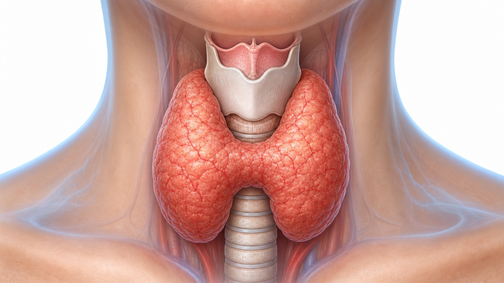
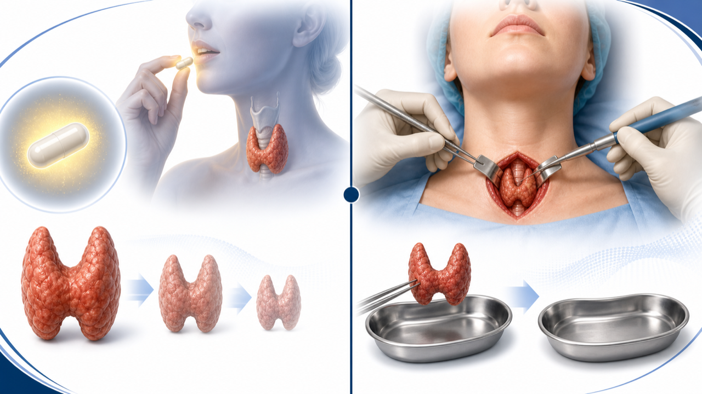
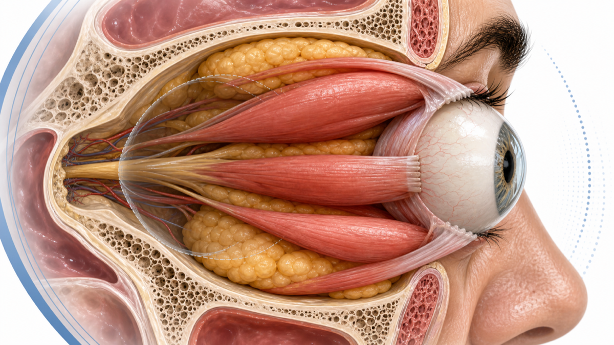

그레이브스병,
내 면역이 갑상선을 자극하는 병
그레이브스병 (Graves' disease) — 갑상선기능항진증의 가장 흔한 원인. 자가항체(TRAb)가 갑상선을 계속 자극합니다. 진단부터 항갑상선제·재발과 관해·방사성요오드/수술·눈 증상까지 함께 살펴봅니다
그레이브스병 (Graves' disease) 이란
면역계가 갑상선을 '켜진 상태'로 고정시키는 자가면역질환입니다
원인 중 그레이브스병
(남성 대비)
연령대
왜 갑상선이 과하게 일하나 (기전)
자가항체가 갑상선의 스위치를 계속 눌러 두는 것이 핵심입니다
면역계가 만든 자가항체 TRAb가 갑상선의 'TSH 수용체'를 계속 켜 둡니다. 스위치가 눌린 채 고정되어 갑상선이 쉬지 않고 호르몬을 만들어 냅니다.
같은 항체와 염증이 눈 뒤 조직도 자극하면 눈이 붓고 튀어나오는 갑상선 안병증이 함께 올 수 있습니다. 갑상선은 전체가 고르게 부어(미만성 비대) 목 앞이 도톰해지고, 청진 시 혈류 잡음이 들리기도 합니다. 그래서 그레이브스병은 갑상선만의 병이 아니라 온몸에 영향을 주는 자가면역 반응입니다.
주요 증상 (Symptoms)
대사가 빨라지면서 나타나는 전신 증상 — 눈·목의 변화가 함께 오면 그레이브스병을 의심합니다
진단 흐름 (Diagnostic Flow)
피검사로 기능을 확인하고, 항체(TRAb)로 그레이브스병인지 확진합니다

세 가지 치료 방법
그레이브스병은 항갑상선제 · 방사성요오드 · 수술 세 가지가 모두 가능합니다 — 상황에 맞게 함께 선택합니다
항갑상선제 치료 · 추적 · 중단 일정
보통 12~18개월 복용 후 중단을 시도하며, 재발 위험이 높으면 저용량으로 오래 유지하기도 합니다
약 부작용 · 이렇게 대응하세요
드물지만 중요한 부작용을 알아두고, 신호가 오면 스스로 판단해 약을 계속 먹지 말고 바로 검사받으세요
재발과 관해 — 언제 약을 끊을 수 있나
항체(TRAb) 수치로 재발 가능성을 미리 가늠할 수 있습니다
약을 끊으면 약 절반에서 다시 재발합니다. 그래서 '언제 끊을 수 있는지'를 검사로 예측하는 것이 중요합니다.
진단할 때 TRAb 항체가 높을수록 관해(약 없이 정상 유지) 가능성이 낮습니다. 한국인을 포함한 최근 연구에서 항체가 낮은 그룹은 약 60%가 관해에 도달했지만, 높은 그룹은 약 30%에 그쳤습니다. 25년 장기 추적에서는 약으로 시작한 환자 3명 중 1명만 약 없이 정상을 유지했고, 많은 분이 결국 방사성요오드나 수술을 받았습니다. 재발이 실패는 아니며, 다음 단계 치료로 안전하게 넘어가면 됩니다.
근본 치료 — 방사성요오드 vs 수술
약으로 조절이 어렵거나 재발이 잦을 때 선택하는 두 가지 근본 치료법입니다
- 캡슐 한 번 복용, 입원 없이 외래로 진행
- 갑상선을 서서히 줄여 기능을 낮춤
- 2025 대한갑상선학회: 고정 용량 10~15 mCi 권고
- 대개 갑상선저하증으로 → 갑상선호르몬제 평생 복용
- 눈병증(안병증)을 3~6배 악화시킬 수 있음
- 활동성 중증 안병증 · 임신 · 수유는 금기
- 가장 빠르고 확실 — 6개월 관해율 약 99%
- 큰 갑상선종 · 눌림 증상 · 결절/암 의심에 적합
- 활동성 중증 안병증에도 안전하게 선택 가능
- 전신마취가 필요한 목 수술
- 부갑상선 · 성대 신경 손상 위험(드묾)
- 수술 후 갑상선호르몬제 평생 복용

그레이브스 안병증 (눈 증상)
그레이브스병에서 눈이 붓고 튀어나올 수 있습니다 — 금연이 가장 중요한 관리입니다

오늘 꼭 기억할 핵심 8가지
안전한 복용과 꾸준한 관리를 위한 환자 실천 항목입니다
꾸준히 관리하면
안전하게 조절할 수 있습니다
치료 방법은 함께 고민하고 결정하겠습니다 — 궁금한 점은 언제든 문의해 주세요
광교중앙로 298, 4층
토요일 08:30~13:30
같은 자료를 다시 볼 수 있어요